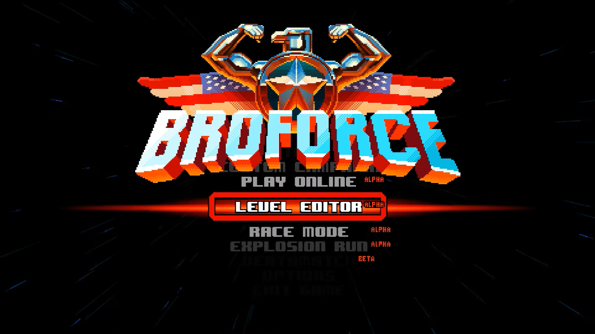
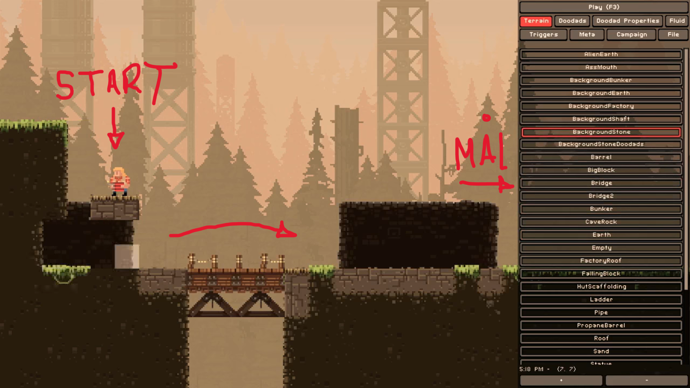
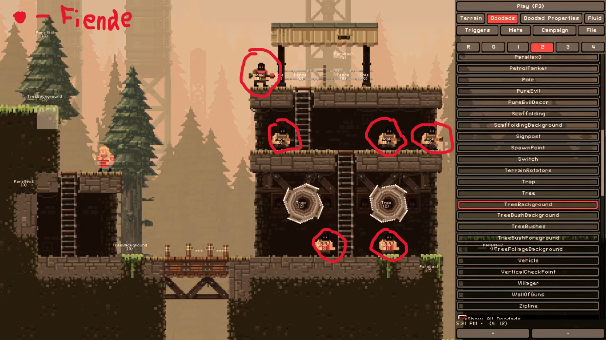
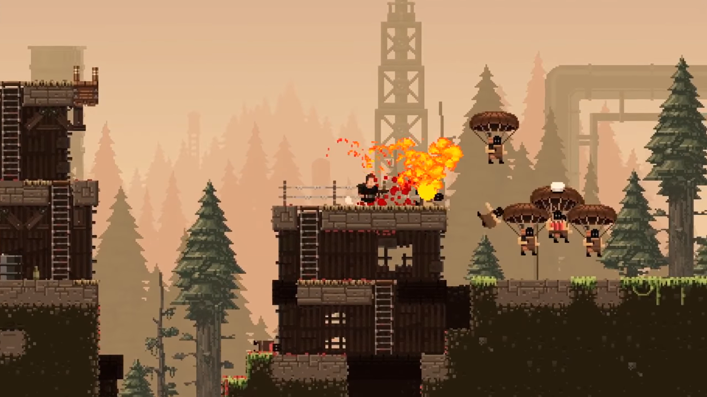

☰ Meny
Hem
Historia
Pixel Art Tekniker
Pixel Art
Nivådesign
Karaktärsdesign
Verktyg
Resurser
×
Hem
Historia
Pixel Art Tekniker
Pixel Art
Nivådesign
Karaktärsdesign
Verktyg
Resurser
Nivådesign
Nivådesign i Broforce
Gå in på Level Editor på spelets meny.

Planera Din Nivå:
Skapa en grov layout över din nivå, inkludera viktiga punkter som start, mål och hinder. Tänk på spelarnas rörelse och flöde genom nivån.

Implementera Hinder:
Lägg till plattformar, fiender och fällor för att skapa utmaningar. Variera typen av hinder för att hålla spelet intressant.

Testa och Justera:
Spela igenom din nivå för att identifiera svårigheter och möjliga förbättringar. Justera placering och svårighetsgrad baserat på feedback.
